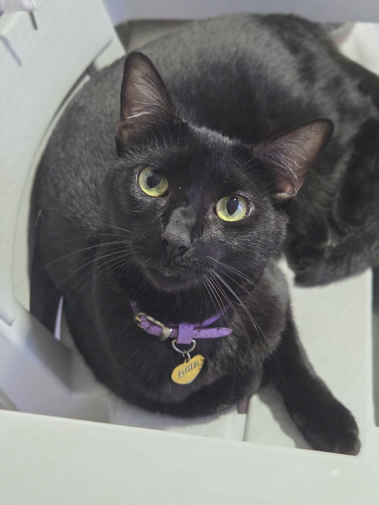
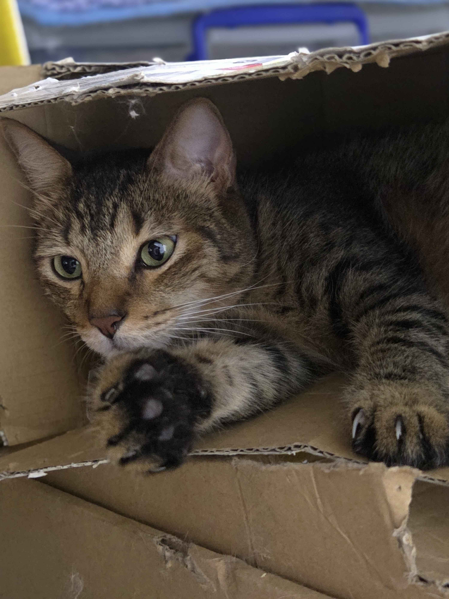

RESCATADOS
Disponibles para la adopción
Jul
Edad: 4 años
Raza: Siames
Tamaño: Mediano
Estado: Disponible
Ver Perfil
Oreo
Edad: 3 años
Raza: Blanco con Negro
Tamaño: Mediano
Estado: Disponible
Ver Perfil
Lilith

Edad: 4 años
Raza: Oscurita
Tamaño: Mediano
Estado: Disponible
Ver Perfil
Lucy
Edad: 2 años
Raza: Atigrada
Tamaño: Pequeño
Estado: Disponible
Ver Perfil
Nyx
Edad: 5 años
Raza: Negro con blanco
Tamaño: Grande
Estado: Disponible
Ver Perfil
Yoshiko

Edad: 3 años
Raza: Atigrado
Tamaño: Mediano
Estado: Disponible
Ver Perfil
Adoptados
Kira
Edad: 1 año
Raza: Desconocida
Tamaño: Pequeño
Estado: Adoptada
Ver Perfil
Luna
Edad: 6 meses
Raza: Desconocida
Tamaño: Pequeño
Estado: Adoptada
Ver Perfil